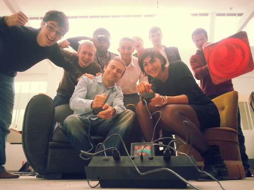

En voiture pour Simplon !
Après un processus de sélection dynamique, j’ai fait ma pré-rentrée au 55 rue de Vincennes : le QG Montreuillois de Simplon.co.
Simplon on Rails
Ambiance open bar
Dès les premiers pas dans l’édifice, Wouaaah ça en jette! Un grand espace ouvert, bien rénové, illuminé à la lumière naturelle par 3 verrières qui traversent le toit dans la longueur.
On se sent vite chez soit. Une douche des sanitaires, un coin cuisine en devenir, un ammeublement patchwork et un connexion internet qui dépote … en somme de quoi passer de bons moments l’esprit concentré sur l’essentiel : apprendre le métier de développeur web!
Il faut considérer l’espace comme un centre de développement de compétences : nous (les recrues) sommes des artisans du web en devenir. Nos machines sont nos ordinateurs, notre boîte à outil numérique est constituée des dernières innovations développées par les communautées du logiciel open source et du logiciel libre. Notre réseau de compagnonnage se construit via GitHub. Enfin les porteurs de projets et les entreprises qui gravitent autour de Simplon.co nous plongent dans la réalité de l’entrepreneuriat.
Mise à niveau en autonomie
Pour le mois de septembre, nous avons accès à l’espace pour aquérir les bases et commencer pleins pot dès que chacun aura une solution pour financer sa formation. Chacun commence à son rythme en fonction de ses expériences passées. L’objectif est d’acquérir les prérequis nécessaire au développement d’applications web basées sur Ruby :
Dans le passé je me suis amusé avec le HTML et le CSS. Je me suis donc lancé dans le développement de mon Blog. Ça me permet d’utiliser git sur un projet concret.
J’essaye de garder l’interface simple et facile à lire. Oui, je lis beaucoup dans le noir et les fonds blanc me piquent les yeux!
Porchaine étape: un projet en équipe pour utiliser git là où il est le plus utile : la collaboration à plusieurs!
Des outils taillés pour la collaboration
Par ordre de persistance croissante
Le chat
Une question à poser en live sans être physiquement présent? une vidéo à poster pour faire rire les camarades? des états d’âme à partager? une insomnie et plus d’amis sur facebook avec qui discuter? … ou la simple envie d’apprivoiser le bot?
Le salon recrues est fait pour ça :)
À une époque où le grand bleu est omnisprésent, quelle joie de rédécouvrir le confort d’un salon de chat!
Discourse
Un problème technique insoluble, et ce ***** de manuel qui ne fait rien pour clarifier la situation? Bienvenue sur le forum propulsé par Discourse. Parmi les dévelopeurs de Discourse on retrouve Jeff Atwood aussi co-fondateur de l’incontournable Stack Overflow. Un chouette projet qui semble avoir les moyens de ses ambitions :
We decided to reboot forum software for the next decade, getting us out of the 1999 design rut we’re stuck in.
No pages, keep scrolling!
Bref, le forum sert à :
- partager et brainstormer sur les embryons de projets,
- poser les questions techniques qui cherchent des réponses,
- régler définitivement les situations de crises du type “Comment on fait quand y’a plus de café ?”
Le Wiki sur github
Le wiki est notre base de connaissance. On y archive le contenu utile à l’ensemble des recrues.
- Les howto qui font suite à un problème résolu sur le forum,
- les liens vers le contenu pédagogique postés par le plus geek de nos mentors.
Intégration
Si vous me lisez vous avez surement entendu parler du concours Launching People organisé par Samsung. Encore désolé pour le spam…et surtout MERCI pour votre soutient! Vous nous avez permis d’accéder à la finale, résultat des courses courant octobre après délibération du jury.
Screenshot du lundi matin
Coté recrues ce premier défi de communication a soudé la promo. L’ambiance ici me motive à 200%, et je pense que c’est le cas pour bon nombre de mes co-équipier(ère)s.

~ E.